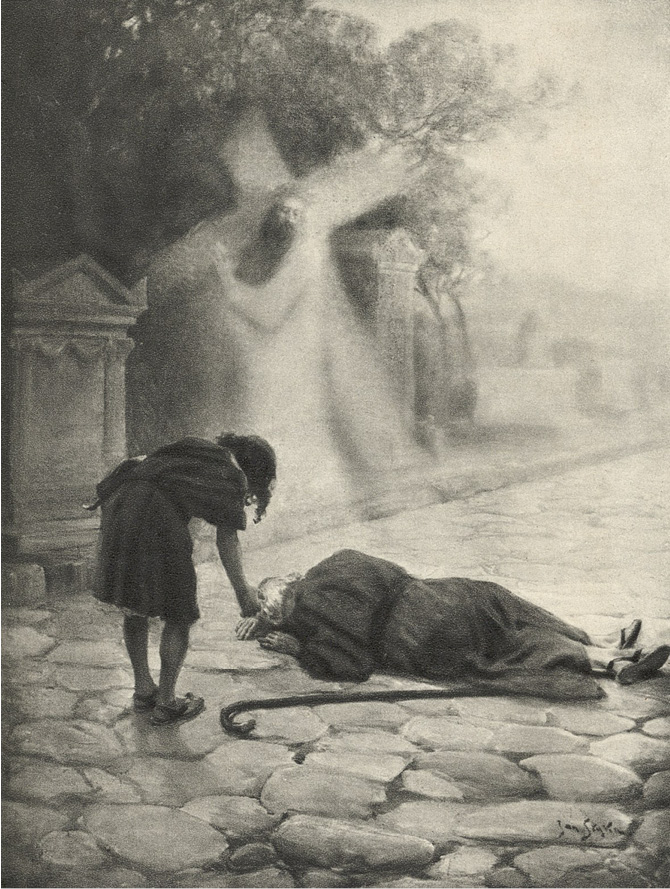

LXX
Na úsvitě příštího dne ubíraly se dvě tmavé postavy po cestě Appiově k rovinám Campanie.
Jednou z nich byl Nazarius, druhou apoštol Petr, jenž opouštěl Řím a vyznavače, kteří byli v něm mučeni.
Nebe na východě nabývalo již zeleného přísvitu, který zvolna, stále jasněji vinul se jako lem v dolejší části šafránovou barvou. Stromy se stříbrným listím, bílé mramory letohrádků a oblouky vodovodů, běžící po rovině k městu, vynořovaly se ze stínu. Postupně se zjasňovala zeleň nebe, nasycujíc se zlatem. Potom začal růžověti východ a ozářil hory Albské, které se objevily čarokrásné, liliové, jako by se skládaly jen ze samých lesků.
Úsvit se odrážel na krůpějích rosy, chvějících se na listí stromů. Mlha řidla, odhalujíc stále širší výhled na rovinu, na domy, které v ní stály, na hřbitově, městečka a skupiny stromů, mezi nimiž se bělely sloupy chrámů.
Cesta byla prázdná. Venkované, kteří dováželi zeleninu do města, nebyli patrně ještě s to, aby zapřáhli do vozíků. Od kamenných desek, jimiž byla silnice vydlážděna až k horám, dolétal v tichu klapot dřevěných opánků, jaké měli poutníci na nohou.
Pak se slunce vynořilo za řetězem hor, ale současně zvláštní úkaz překvapil oči apoštolovy. Zdálo se mu totiž, že zlatá koule, místo aby stoupala na nebi výš a výše, snesla se s hor a valí se po cestě. Tehdy se Petr zastavil a řekl:
„Vidíš onen jas, jenž se k nám blíží?“
„Nevidím ničeho,“ odpověděl Nazarius.
Ale Petr se za chvíli ozval, zastíniv si oči rukou: „Jakási postava kráčí k nám ve sluneční záři.“ K jejich sluchu však nezalétal nejmenší ohlas kroků. Kolem bylo úplné ticho. Nazarius jen viděl, že v povzdálí se zachvívají stromy, jako by jimi někdo třásl, a že jas se rozlévá po rovině stále šířeji.
A začal se s údivem dívati na apoštola.
„Rabí, co je ti?“ zvolal s nepokojem.
Ale z rukou Petrových vypadla k zemi poutnická hůl, oči nehnutě zíraly před sebe, ústa byla pootevřena, ve tváři se zračil úžas, radost i nadšení. Pojednou se vrhl na kolena, natahuje ruce před sebe, a z jeho úst vydral se výkřik:
„Kriste…! Kriste…!“
A hlavou přilnul k zemi, jako by líbal čísi stopy. Dlouho trvalo mlčení, načež se v tichu ozvala starcova slova, přerušovaná vzlykotem:
„Quo vadis, Domine…?“1
Ale Nazarius neslyšel odpovědi, ke sluchu Petrovu však zalétl smutný a sladký hlas, jenž pravil: „Ježto opouštíš lid můj, jdu do Říma, abych byl ukřižován po druhé!“
Apoštol ležel na zemi s obličejem v prachu, bez hnutí a beze slova. Nazariovi se již zdálo, že omdlel nebo zesnul, ale on konečně vstal, třesoucíma se rukama zvedl poutnickou hůl, a ničeho nemluvě, zamířil zpět k sedmi pahorkům města.
Jinoch pak, vida to, opakoval jako ozvěna:
„Quo vadis, Domine…?“
„Do Říma!“ tiše odvětil apoštol.
A vrátil se.
Pavel, Jan, Linus a všichni věrní přijali jej s údivem a úzkostí tím větší, že právě na úsvitě, hned po jeho odchodu, obklíčili praetoriáni příbytek Miriamin a hledali v něm apoštola. Ale on na všecky otázky odpovídal jim pouze s radostí a klidem:
„Viděl jsem Pána!“
A ještě téhož večera odebral se na hřbitov ostrianský, aby učil a pokřtil ty, kdož chtěli nechati se skropit vodou života.
A od té doby přicházel tam denně, za ním pak se táhly stále četnější zástupy. Zdálo se, že z každé mučednické slzy rodí se noví vyznavači a že každý sten v aréně odráží se jako ozvěna v tisícerých prsou. Caesar se ztápěl v krvi, Řím a celý pohanský svět šílel. Ale ti, jimž bylo dosti zločinu a šílení, ti, po nichž bylo šlapáno, ti, jejichž život byl životem utrpení a ústrku, všichni utištění, všichni smutní, všichni nešťastní přicházeli naslouchat podivné pověsti o Bohu, jenž z lásky k lidem nechal se ukřižovati, aby vykoupil jejich viny.
Nalézajíce pak Boha, kterého mohli milovati, nalézali to, čeho nemohl tehdejší svět dáti dosud nikomu – štěstí lásky.
A Petr pochopil, že ani Caesar, ani všecky jeho legie nepřemohou živé pravdy, že jí nezalejí ani slzy, ani krev, a že teprve nyní začíná se její vítězství. Rovněž pochopil, proč jej Pán vrátil z cesty: To město pýchy, zločinu, prostopášnosti a moci začínalo býti městem Jeho a dvojnásobným sídlem, ze kterého proudila do světa vláda těl i duší.

Apoštol ležel na zemi s obličejem v prachu, bez hnutí…
Kam kráčíš, pane? ↩︎